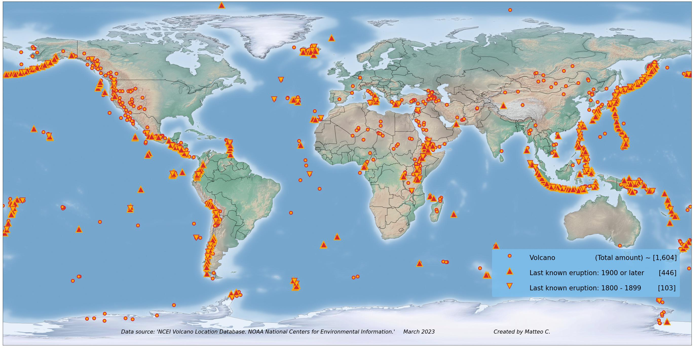

Erupção vulcânica é o fenômeno de extravasamento do magma do interior do planeta Terra para a sua superfície e também para a atmosfera, sendo a erupção a etapa final de um processo conhecido como vulcanismo. Além do magma, que consiste em um material formado por rochas fundidas e que fica armazenado em câmaras sob a crosta terrestre, fragmentos de rocha e fumaça, esta composta por material particulado, são igualmente liberados durante um episódio de erupção.
🔥 Antes da Erupção: Prepare-se
- Conheça sua área: Verifique se você vive em uma zona de risco vulcânico e identifique rotas de evacuação.
- Monte um kit de emergência: Inclua água potável, alimentos não perecíveis, documentos, lanternas, rádio, máscaras e óculos de proteção.
- Planeje com sua família: Defina pontos de encontro e contatos de emergência.
- Acompanhe fontes oficiais: Siga alertas da Defesa Civil, observatórios vulcânicos e rádios locais.
🚨 Durante a Erupção: Evacue com Segurança
- Siga imediatamente as instruções das autoridades.
- Proteja-se: Use máscara e óculos para evitar inalação de cinzas e gases tóxicos.
- Evite áreas baixas e vales: Lava e fluxos piroclásticos tendem a seguir esses caminhos.
- Não dirija em áreas com queda de cinzas: Elas podem danificar veículos e reduzir a visibilidade.
- Busque abrigo em locais fechados e seguros, longe da direção do vento.
✅ Após a Erupção: Retorne com Cautela
- Espere autorização oficial para retornar à área afetada.
- Evite contato direto com cinzas acumuladas: Elas podem conter substâncias tóxicas.
- Limpe telhados com cuidado: O peso das cinzas pode causar desabamentos.
- Verifique água e alimentos: Podem estar contaminados.
Mapa de monitoramento ativo de Erupções Vulcânicas ao redor do mundo
